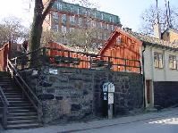

Södermalm i tid och rum. Stockholm
7-9. Fjällgatan 20, 20A, 22, 24, 26 och 28
Dessa hus är byggda på 1890-talet som bostadshus i sten för mera borgerliga familjer. »Doktorsänkan« Sjöbeck står som ägare till tomten nr 20-22 år 1870, senare ägs nummer 20 av en lärarinna, fröken Norrbom, 20 A av en med. dr Hjort och 22 av grosshandlare Seippel. Sjökaptenerna som bott i de tre husen är många. Huset Fjällgatan 20A var tidigare en del av Stigbergets sjukhus. Fastigheterna är privatägda.
|
Ur Ett berg vid vattnet, Per Anders Fogelström, 1969 De närmast följande husen i raden, 20-20A-22, är östra Fjällgatans motsvarighet till stentolvan på västsidan, relativt sent byggda bostadshus för mera borgerliga familjer. "Doktorsänkan" Sjöbeck står som ägare av alla tre husen 1870, senare ägs nummer 20 av en lärarinna, fröken Norrbom, 20A av med. doktor Hj. Hjort och 22 av grosshandlarenSeippel (som hade brädgård på Djurgården). Sjökaptenerna som bott i de tre husen är många. 20A tillhör nu Stigbergets sjukhus medan Fjällgatans f.n. enda affär, en keramikbod, finns i 22-an. De tre husen kan väl inte anses ha något större kulturhistoriskt värde men de har smält in iFjällgatsbilden och man hoppas att de ska få stå kvar och inte ersättas av några mera strikta "klossar" som slår sönder bilden och känslan av en gammal gata.
Fjällgatan 26 (8) Huset byggdes på 1720-talet. Det har inredningsdetaljer från ombyggnader på 1860-talet och under 1900-talet.
  Fjällgatan 28 (9)
Ett numer försvunnet hus, 28-an, låg där den lilla täppan nu i terrasser följer trappgränden. Den har kallats för "Söders hängande trädgårdar" och i en tidningsskildring 1942 nämns att täppan prunkar av"kryddväxter, stockrosor och annat gammaldags som passar rätt väl i denna omgivning".Tyvärr har parken väl förfallit litet sedan dess och bristen på belysning har medfört att den särskilt sommar- och höstkvällar mest blivit ett tillhåll för fyllerister som(sedan flaskorna tömts) har all möda att ta sig ut mellan buskagen och nerför de branta trapporna i mörkret. |